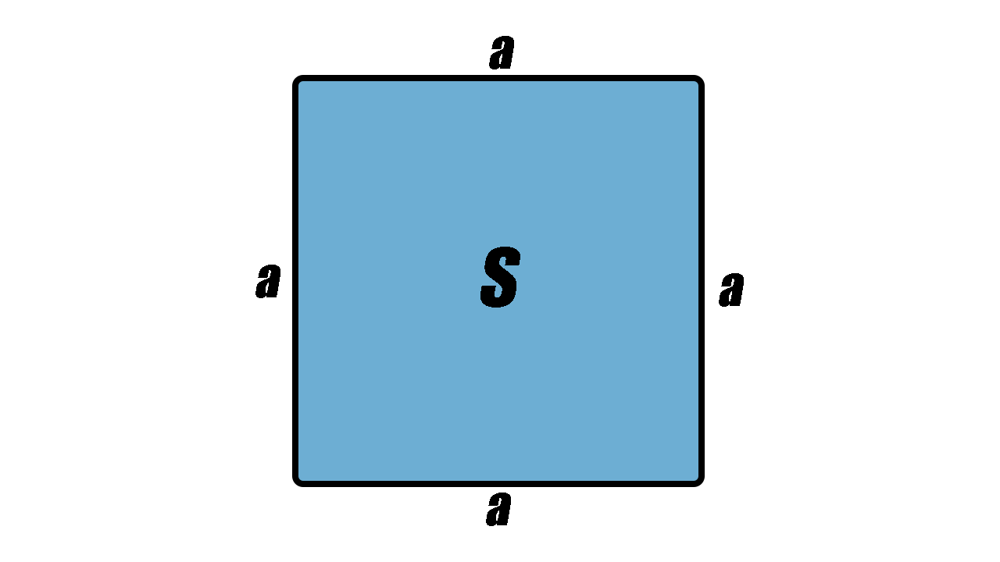
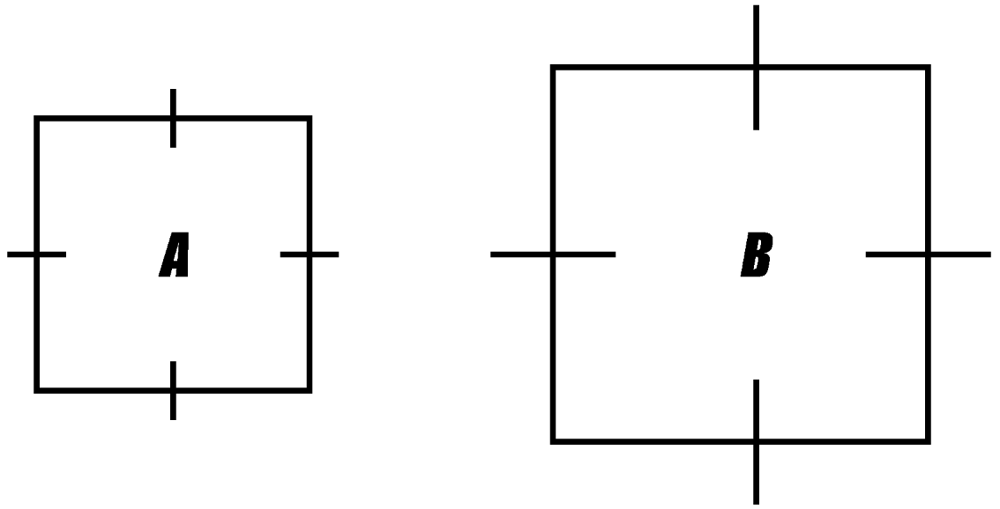

1. Kas ir kvadrāta laukums?
Lielums, kas raksturo virsmas izmēru
Mala reiz mala
2. Aprēķini kvadrāta laukumu, ja vienas malas garums ir 8cm.
S=...
32cm2
48cm2
64cm2

5. Aprēķini A un B kvadrāta laukumu.
A kvadrāts 4cm
S=...
16cm2
20cm2
12cm2
B kvadrāts 9cm
S=...
90cm2
81cm2
80cm2
